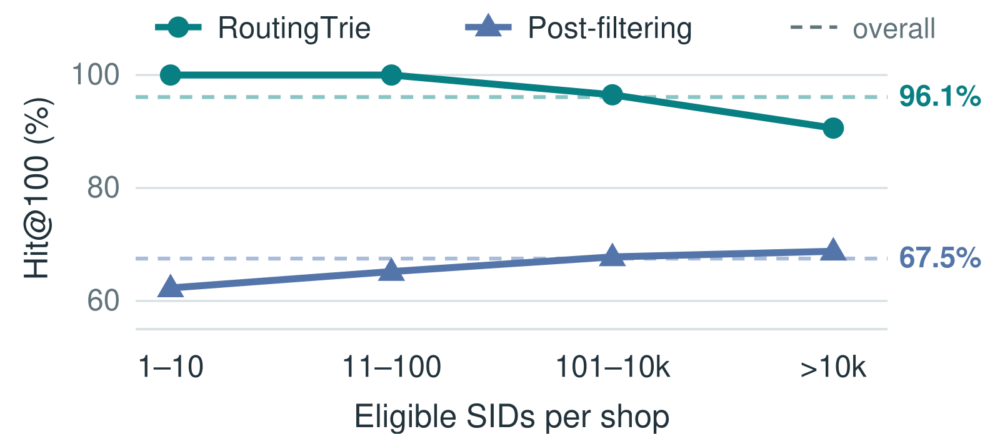

目录 · 6 节
1一次店铺 7 的请求从头到尾的流程2模型才写第一个 token，系统怎么知道这条分支下面有没有店铺 7？3每条分支给每家店各留一位，内存放不下4索引的内存占用和每次检查的耗时5在生产系统上，Hit@100 从 67.5% 升到 96.1%6价格区间、组合条件和其他 SID 设计下的边界生成式召回要只出某一家店的商品时，等商品编号整串生成完再过滤已经晚了，Shopify 这篇论文的办法是：模型每生成编号的一位，系统都先查一下“接这一位往下，还有没有这家店的货”。
生成式召回给每件商品配一串短编码 Semantic ID（SID），模型根据用户历史一个 token 一个 token 地写出 SID，系统再把 SID 还原成商品。Shopify 的系统里 SID 有三层，也就是由三个 token 组成，比如 12-305-8（示意，每个数字是一个 token）。模型写 token 时，目录 trie（把商品目录里真实存在的 SID 建成的前缀树）限定下一个 token 只能从真实存在的后续 token 中选。beam search 再按模型分数留下分数最高的若干条前缀，前缀就是已经写出来的前半段，比如 12-305。
下文一直用同一个场景（示意）：一位加拿大用户在一家小店（店铺 7）的店内页往下滑，“猜你喜欢”这个位置只能出店铺 7 的商品，而且商品必须能卖到加拿大。
难就难在，目录 trie 只保证写出来的 SID 对应真实商品，不保证商品属于店铺 7，也不保证它能卖到加拿大。以同一条前缀开头的 SID，对应的商品可能来自好几家店。模型打分的输入只有用户历史和可选的 query，“只要店铺 7”这个条件不在其中，所以分数最高的几条前缀，对应的商品完全可能都属于别家店。
最直接的做法是事后过滤：系统照常生成，把 SID 还原成商品，再丢掉不符合条件的商品。问题在于 beam 的名额有限，后来被丢掉的商品，它们的前缀在生成时已经占过名额。放回店铺 7 的例子，设 beam 宽度是 2（每一步只保留 2 条前缀），某一步有四条候选分支 e0 到 e3。分支就是 trie 上从当前前缀往下接一个 token 的一条路，论文叫 edge；一条分支“下面的商品”，指 SID 经过这条分支的所有商品。各分支下面的店铺和国家沿用论文图 3（见下文）的例子，模型分是示意。事后过滤时 beam 只看模型分，所以留下分数最高的两条。
| 候选分支 | 模型分（示意） | 下面有哪些店的商品 | 下面有能卖到加拿大的商品吗 | 事后过滤时 beam 留下吗 |
|---|---|---|---|---|
| e1 | 0.40 | 店铺 9 | 有 | 留下 |
| e3 | 0.30 | 店铺 7、店铺 9 | 没有 | 留下 |
| e0 | 0.20 | 店铺 7、店铺 12 | 有 | 挤掉 |
| e2 | 0.10 | 店铺 7 | 有 | 挤掉 |
分数最高的 e1 下面全是店铺 9 的商品，e3 下面的商品全都卖不到加拿大，这两条分支生成的商品到最后都会被丢掉。e2 下面的商品全来自店铺 7，其中能卖到加拿大的商品本来是合格的结果，却因为 e2 在这一步被挤掉而生成不出来。beam 只留下了 e1 和 e3，所以在这个简化例子里，过滤之后系统一件商品都返回不了。
这篇论文改的是模型打完分、beam 还没选的这个环节。RoutingTrie 保留原来的目录 trie，给每个商品字段（店铺、国家、是否有货这类属性）加一份索引，记录每条分支下面出现过哪些取值。每次选 beam 之前，系统先用索引排除下面没有所需取值（比如没有店铺 7 的商品）的分支，被排除的分支不参加 beam 选择。作者在生产系统上重放了 23,167 个历史购买会话，每个会话都限定只出用户实际所买商品的那家店。两种做法用同一份模型分数，从事后过滤换成 RoutingTrie 后，用户实际买的商品出现在前 100 件合格商品里的会话比例（Hit@100）从 67.5% 升到 96.1%。请求延迟的中位数只多了 1.1 ms。
一次店铺 7 的请求从头到尾的流程
RoutingTrie 的工作分成两段：离线把索引建好，请求来了在每写一个 token 时查索引。下面这张表按店铺 7 的请求走一遍。表里的 mask 是一串 0 和 1，每条候选分支占一位，1 表示这条分支可以参加 beam 选择。
| 步骤 | 输入 | 操作 | 产出 | 什么时候跑 |
|---|---|---|---|---|
| 1 | 全部商品的字段，加上已有的目录 trie | 每个字段从 SID 最后一层的分支往上汇总，记录每条分支下面出现过的取值 | 每条分支的取值集合，比如 e0 的店铺集合 {7, 12} | 离线 |
| 2 | 每条分支的取值集合 | 按字段选一种存法（下文的 Dense Bitset 或 Sparse List）存起来 | 每个字段一份索引 | 离线 |
| 3 | beam 里的每条前缀 | trie 列出候选分支，模型给分 | 候选分支和分数 | 每写一个 token |
| 4 | 候选分支，请求条件「国家 25（示意，代表加拿大）且店铺 7」 | 每个字段查自己的索引，再按请求里的逻辑合并结果（本文例子只用 AND；论文的局限部分说，一般的 AND、OR、NOT 组合在汇总分支取值时需要额外处理） | mask，比如 (1, 0, 1, 0)，依次对应 e0 到 e3 | 每写一个 token |
| 5 | 模型分和 mask | 只在 mask 为 1 的分支里按分数选前几名 | 新一批前缀 | 每写一个 token |
| 6 | 写完的 SID | 还原成商品，逐件核对是否满足请求的全部条件（原因见下一节） | 合格商品 | 解码结束后 |

模型才写第一个 token，系统怎么知道这条分支下面有没有店铺 7？
模型写第一个 token 时，离完整 SID 还差两个 token，系统手里还没有任何一件具体商品。如果只在最底层记录店铺，上面两层的分支就无从判断。所以 RoutingTrie 从最底层往上汇总：最底层分支（SID 的最后一个 token）的集合，是共用这个 SID 的所有商品的取值。上一层分支的集合是它下面各分支集合的并集，因为下面各分支的商品都算在这条分支下面。
示意：SID 12-305-8 下面有店铺 7 和店铺 12 的各一件商品，12-305-9 下面只有店铺 7 的商品。这两个 SID 的店铺集合分别是 {7, 12} 和 {7}。假设前缀 12-305 下面只有这两个 SID，所以它们上一层分支 305 的集合就是两者的并集 {7, 12}。这意味着系统检查 305 时只需查 7 在不在这个集合里，不用把下面的 SID 逐个翻一遍。
有了集合，每次检查就是每个字段对每条候选分支回答一个是或否。回到前面的四条分支，把国家编号 25 当作加拿大（示意）：
- 店铺 7 的检查：e0、e2、e3 下面有，e1 下面没有，按 e0 到 e3 的顺序写，结果是 (1, 0, 1, 1)。
- 国家 25 的检查：e0、e1、e2 下面有，e3 下面没有，结果是 (1, 1, 1, 0)。
- 请求要求两个条件都满足，所以两串结果逐位取 AND（同一位上两个都是 1，结果才是 1），mask 是 (1, 0, 1, 0)，意味着只有 e0 和 e2 能参加 beam 选择。
mask 取消了 e1 和 e3 的选择资格，beam 的两个名额落到 e0（0.20）和 e2（0.10）上。这个例子说明，RoutingTrie 没有改动模型分数，只改了分数在哪些分支之间比较。
一条分支的 mask 为 1，也不等于这条分支下面的每件商品都合格，所以表里第 6 步不能省。一个 SID 可以对应多件商品，12-305-8 里店铺 12 那件还原出来后必须丢掉。
各字段分开汇总，还会让下面没有合格商品的分支通过检查。e0 的 mask 为 1，只说明下面有店铺 7 的商品，也有能卖到加拿大的商品，这两件可能不是同一件。示意：店铺 7 那件只卖美国，能卖到加拿大的是店铺 12 那件，e0 下面其实没有合格商品。这时 e0 照样占掉一个 beam 名额，分数更低但真有合格商品的分支可能被挤掉。作者因此明确写道，beam 宽度有限时，RoutingTrie 不能保证合格商品一件不丢。在这类“几个条件同时满足”的请求里，mask 能确定挡掉的，只有下面根本没有所需取值的分支。
每条分支给每家店各留一位，内存放不下
检查的逻辑很简单，麻烦在于这些集合怎么存。作者自己生成的测试目录 ShopTrie 有 3.38 亿条分支，每个字段都要在每条分支上存一个集合。字段之间的差别也很大：是否有货只有 2 种取值，国家有 240 种，店铺约 190 万种。在真实商品目录里，只有两种取值的字段，一条分支下面平均出现的取值超过全部可能取值的 50%；类目和店铺的这个比例不到 0.1%。同一种存法很难同时适合取值少、集合满的字段和取值多、集合稀的字段，所以作者准备了两种。
国家这样的字段用 Dense Bitset：每个国家占一位，一条分支对应一行 0 和 1，查询时看对应的位是不是 1。很多分支下面的国家集合一模一样，所以相同的行只存一次，每条分支只记自己用第几行。
示意：有 1,000 条分支，每行 8 字节，其中只有 2 种不同的行。每条分支各存一行要 8,000 字节。相同的行共用后，2 行占 16 字节，1,000 个 4 字节的行号占 4,000 字节，一共 4,016 字节，省了将近一半。论文图 3 里 e0、e1、e2 共用一行，e3 用另一行，前面的 (1, 1, 1, 0) 就是这样查出来的：系统读一次行号，再读这一行的第 25 位。两次数组读取就够了，国家总数多少都不改变步数。
店铺字段照搬这个办法就撑不住了。店铺约 190 万种，哪怕一条分支下面只有一家店，这一行也要留约 190 万位。实际上一条分支下面平均只有 2.71 家店，中位数是 1 家，绝大多数位都空着。作者估算店铺字段用 Dense Bitset 要 22.4 TiB。
Sparse List 只存实际出现的店铺。它把每条分支的店铺编号排好序，全部接到一个大数组 values 里，再用数组 offsets 记录每条分支的起止位置，布局和 CSR（压缩稀疏行，只存非零元素和每行起止位置的格式）存稀疏矩阵一样。
示意直接用论文图 3 的数据：values 是 [7, 12, 9, 7, 7, 9]，offsets 是 [0, 2, 3, 4, 6]。查 e1 有没有店铺 7 时，offsets 的第 1 项和第 2 项（从 0 开始数）是 2 和 3，所以 e1 的店铺在 values 的下标 2 到下标 3 之前，也就是 [9]。二分查找找不到 7，结果是 0。查 e0 时范围是 [7, 12]，能找到 7，结果是 1。二分查找的比较次数只取决于这条分支下面有几家店，和全站有多少家店无关。用 Sparse List 存店铺字段，实测只要 5.92 GiB，Dense Bitset 的估算值约是它的 3,900 倍。
两种存法谁更省，取决于字段有多少种取值、各分支的集合重复得多不多。作者比较两种存法各占多少字节，得到一条选择公式，满足下式时 Dense Bitset 更省内存：
式中 I 是一条分支下面平均有几个取值，M 是这个字段一共有多少种取值，E 是分支总数，D 是 Dense Bitset 里互不相同的行数。Dense Bitset 要 字节（各分支的行号加上互不相同的行）。Sparse List 要 字节（全部编号加上 offsets）。比较这两个数就得到上式。D/E 越小，说明相同的行越多。直觉上，M 越大每一行越长，Dense Bitset 越贵；I 越大要存的编号越多，Sparse List 越贵；相同的行越多，Dense Bitset 越便宜。E 很大时，最后的 2/E 小到可以忽略。
论文给了一个能心算的例子：M 是 16,384 时，M/64 等于 256。D/E 为 0.10 时门槛（公式右边的值，I 超过它时 Dense Bitset 更省）是 2×0.10×256−1，算下来约 50；D/E 降到 0.01 时门槛约是 4。这说明同一个字段只要相同的行变多，Dense Bitset 划算的条件就从平均 50 个取值放宽到 4 个。
把论文的字段代进去，选择就很清楚了。国家的 M 是 240，M/64 向上取整是 4，互不相同的行数不会超过分支数，D/E 最大是 1，所以门槛最高约 7，而实际 I 是 62.95，公式给出的答案是 Dense Bitset。店铺的 M/64 约 3 万，示意地取 D/E 为 0.01，门槛约 600，而实际 I 只有 2.71，公式指向 Sparse List。这条公式假设编号占 32 位、bitset 每个字占 64 位，作者的实际实现会按各数组真实占用的位宽重新比较，比较逻辑不变。
索引的内存占用和每次检查的耗时
存法定下来之后，要算的是这些索引实际占多少内存、查一次要多久。ShopTrie 用同样的配置和随机种子，总是生成同样的 trie 和商品字段，部分字段的分布按真实目录的统计校准，这样不同方法能在相同输入上比较。这组实验用三层 SID、每层 8,192 种 token、8 个字段，beam 宽度 64。下表的耗时是 SID 三层加起来的，只计字段检查和生成 mask，不含模型打分和 beam 选择。
| 组件 | 取值种数 | 每条分支平均取值数 | 存法 | 内存（GiB） | CPU 三层总耗时（ms） | GPU 三层总耗时（ms） |
|---|---|---|---|---|---|---|
| 是否有货 | 2 | 1.24 | Dense Bitset | 0.31 | 0.10 | 0.08 |
| 国家 | 240 | 62.95 | Dense Bitset | 1.33 | 0.26 | 0.08 |
| 类目 | 约 5.6K | 1.38 | Sparse List | 1.01 | 0.67 | 0.08 |
| 店铺 | 约 1.9M | 2.71 | Sparse List | 5.92 | 1.26 | 0.09 |
| 共享的 trie（3.38 亿条分支） | – | – | CSR（trie 的连接关系也用这种格式存） | 0.77 | – | – |
| 合计（含表中未列的是否促销、成色、销售渠道、履约方式 4 个字段） | – | – | – | 10.91 | – | – |
trie 加 8 个字段的索引一共占 10.91 GiB，其中店铺一个字段占了一半多。这说明内存主要花在店铺这种取值极多的字段上。
8 个字段的取值种数从 2 到约 190 万，GPU 上三层检查的平均总耗时都落在 0.075 到 0.087 ms。这说明在 GPU 上，字段取值多少基本不影响检查成本。原因在于 Dense Bitset 只测一位，Sparse List 只在很短的一段里二分查找，类目和店铺每条分支平均只有 1.38 和 2.71 个取值，所以二分查找很快结束。
CPU 上不同字段的耗时相差十几倍，从是否有货的 0.10 ms 到店铺的 1.26 ms。beam 宽度从 8 加到 256 时，店铺字段的 CPU 检查耗时从 0.43 ms 涨到 2.67 ms，GPU 只涨约 7%。这说明字段检查在 CPU 上会随 beam 变贵，在 GPU 上 beam 宽度基本不构成压力。
选错存法的代价主要落在内存上。作者把是否有货和国家改成 Sparse List，内存分别变成 Dense Bitset 的约 9 倍和 17 倍；类目改成 Dense Bitset，内存约为 Sparse List 的 10 倍。同样这几次替换，GPU 上的耗时只差 2% 到 6%。这说明在 GPU 上，按公式选省内存的存法不需要拿速度去换。CPU 上类目改成 Dense Bitset 能快约 2.4 倍，代价就是那 10 倍内存。
商品卖完时，是否有货这个字段的取值变了，索引要跟着变，SID trie 不用改。系统只重算受影响分支（这件商品所在的最底层分支和它上面各层分支）的集合，再把对应字段的索引刷新到 GPU。更新 0.01% 的最底层集合（约 3.2 万条分支）时，是否有货等 5 个小字段各要 0.077 到 0.093 秒，类目要 6.288 秒，店铺要 19.530 秒。店铺慢，是因为 values 是一整条连续数组，某条分支的集合变长或变短时，当前的 Sparse List 实现要重新打包这条数组，而短小的 bitset 只改对应的位，可以原地修改。这说明有货状态这类字段能在 0.1 秒内刷新，店铺字段的刷新时间是它们的两百多倍。
在生产系统上，Hit@100 从 67.5% 升到 96.1%
ShopTrie 这个合成目录只能量内存和耗时，商品找回率要在真实系统上看。作者在生产系统上重放了 23,167 个历史购买会话，这套系统的模型有 140 亿参数，trie 三层、每层 8,192 种 token，beam 宽度 100。每个会话把用户实际买的商品当目标，把这件商品所在的店铺当过滤条件，相当于每个会话都是一次“只出某一家店商品”的请求，只是店铺换成了用户实际下单的那家。
事后过滤和 RoutingTrie 两边用的是同一份模型分数，差别只在过滤发生在 beam 选择之前还是生成结束之后。Hit@100 从事后过滤的 67.5% 升到 RoutingTrie 的 96.1%，提升 28.6 个百分点。既然差别只有过滤时机，这说明多找回来的这部分购买不需要换模型，它们此前是在 beam 选择时被挤掉的。

按店铺大小分组看，事后过滤和 RoutingTrie 差距最大的正是店铺 7 这样的小店。只有 1 到 10 个可用 SID 的店铺，Hit@100 从 62.3% 升到 100.0%，其余分组提升 21.8 到 34.8 个百分点。
我的理解是，单店铺条件下，一条前缀能通过 mask，下面就至少有一个这家店的 SID。小店的可用 SID 不超过 10 个，所以每层通过 mask 的前缀最多 10 条，100 个 beam 名额完全放得下，这些 SID 一个都不会被挤掉。SID 都留下只是前提，用户买的商品还要排进 SID 还原后的前 100 件合格商品；实测这一组的 Hit@100 是 100%，这一步在这组会话里也没有丢。事后过滤时，这几条前缀要和全站的前缀抢同样 100 个名额。店铺变大以后，通过 mask 的前缀可能超过 100 条，beam 仍要靠模型分数取舍，用户买的商品仍可能被挤掉，所以整体 Hit@100 停在 96.1%。 Hoot 说

- 示意：目标店只有 2 个 SID，beam 不截断。A 下有 60 件合格商品，B 下有 70 件，目标商品在 B，合计 60+70=130 件，比 100 多 30 件。
- 假如先展开 A，留给 B 的位置只有 100−60=40 个，B 有 30 件排不进前 100。目标商品能否命中，取决于展开和排序。
件数是示意。论文只定义 Hit@100 看 SID 解析后前 100 个合格商品，没有交代共享 SID 的商品如何展开和排序，所以也不能断言排序只在前缀超出 beam 后才影响商品级命中。这一组的 100% 是回放实测，beam 装得下只解释了 SID 为什么不被截断。 出处: 论文 §5.2 Hit@100 定义（SID 解析后前 100 个合格商品）与按店铺分组结果；§4.1 一个 SID 可对应多件 metadata 不同的商品；SID A、B 的件数为示意
延迟是在 H200 上量的完整 GR（生成式召回）流程，包括模型推理、SID 解码、字段检查和 beam 选择。加上用 Sparse List 存店铺字段的 RoutingTrie 后，请求延迟中位数从 27.1 ms 变成 28.2 ms。这说明在这套系统上，把过滤提前到每一步，只多花了 1.1 ms。
这组数字回答的是请求已经限定单一店铺时，用户买的商品能不能被找回来。过滤条件直接取自用户买的商品，所以这组 Hit@100 量的是找回率，不是转化率或收入。
价格区间、组合条件和其他 SID 设计下的边界
RoutingTrie 的索引只认离散取值，价格这类数值要先分桶。示意：某个桶是 50 到 100 元，请求要 80 元以下，索引里只记桶，下面只有 90 元商品的分支也能通过检查，所以还原成商品后必须按原始条件再核对一遍。
店铺 7 加上加拿大这种组合条件，落在生产回放的范围之外。回放只用了单个店铺条件，所以 e0 那种两个条件各自通过、却没有同一件商品同时满足的情况会造成多少损失，这组 Hit@100 给不出答案。
论文的内存、耗时和 Hit@100 结果都建立在残差码本加目录 trie 的设计上。换成独立码本等其他 SID 构造时，只要还用 trie，选 beam 之前先查分支下面有没有所需取值的做法仍然用得上，但前面的内存和耗时数字不能照搬。
回到那位逛店铺 7 的用户，模型给出的分数一点没变，变的是 beam 的两个名额从 e1、e3 换到了 e0、e2。RoutingTrie 往系统里加的只有两样东西：每个字段一份记录每条分支下面有哪些取值的索引，和每次选 beam 之前的检查。
读完这篇，你觉得
夜读鸮记下了，谢谢你的反馈。
点一下即可，无需登录；再点一次撤回。只统计匿名次数，不记录你是谁。
相关论文RELATED
 Generative · 2026-11-02RoFiGR: Coarse Routing, Fine Refinement via Level-Adaptive Distillation in Multimodal Generative Recommendation生成式推荐逐个码地生成物品的 SID，前两层码一旦选错大分支，后面再准也找不回相关物品；而多模态推荐里的 SID 多按图文语义构建，前几个码未必反映哪些物品常被同一批用户购买。这篇论文的 RoFiGR 因此把协同信息集中用在前两层码上。建 SID 时，它让每个物品前两层码向量之和，去贴近一个冻结的序列推荐模型（MISSRec）从用户行为里学到的同一物品的 embedding；生成时再用这个模型当老师：它给每个物品打分，一个分支下所有物品的概率加起来，就是这个分支该有的概率，学生每一步向它学。在三个亚马逊数据集上，五个排序指标（HR@10、NDCG@10 等）共 15 组比较全部领先，这 15 组相对最强基线的提升平均约 9.4%。
Generative · 2026-11-02RoFiGR: Coarse Routing, Fine Refinement via Level-Adaptive Distillation in Multimodal Generative Recommendation生成式推荐逐个码地生成物品的 SID，前两层码一旦选错大分支，后面再准也找不回相关物品；而多模态推荐里的 SID 多按图文语义构建，前几个码未必反映哪些物品常被同一批用户购买。这篇论文的 RoFiGR 因此把协同信息集中用在前两层码上。建 SID 时，它让每个物品前两层码向量之和，去贴近一个冻结的序列推荐模型（MISSRec）从用户行为里学到的同一物品的 embedding；生成时再用这个模型当老师：它给每个物品打分，一个分支下所有物品的概率加起来，就是这个分支该有的概率，学生每一步向它学。在三个亚马逊数据集上，五个排序指标（HR@10、NDCG@10 等）共 15 组比较全部领先，这 15 组相对最强基线的提升平均约 9.4%。 Generative · 2026-08-07Recall Is Not Enough: A Reader-Context Diagnostic for Budget-Constrained Retrieval-Augmented GenerationRAG 在上下文预算很紧时，召回率高不代表模型读到了答案：HotpotQA 上检索已找全标准文档的题里，27% 在打包裁剪时把答案丢了，这些题的精确匹配率只有 0.11。作者建议直接检查标准答案有没有进入最终上下文，并按这个目标做了子模打包器，稳定胜过按相关度截断和 LLMLingua-2 压缩，但对手调启发式基本打平。
Generative · 2026-08-07Recall Is Not Enough: A Reader-Context Diagnostic for Budget-Constrained Retrieval-Augmented GenerationRAG 在上下文预算很紧时，召回率高不代表模型读到了答案：HotpotQA 上检索已找全标准文档的题里，27% 在打包裁剪时把答案丢了，这些题的精确匹配率只有 0.11。作者建议直接检查标准答案有没有进入最终上下文，并按这个目标做了子模打包器，稳定胜过按相关度截断和 LLMLingua-2 压缩，但对手调启发式基本打平。 Generative · 2026-11-05ZeroGR: Filtering-First Constrained Decoding for Generative Recommendation做生成式推荐服务的工程团队值得读：它指出约束解码的大部分计算花在注定被丢弃的候选上，并给出先过滤的系统实现。生成式推荐逐个 token 生成物品编码，每步都要保证编码对应目录里真有的物品。常见做法是先给所有可能的下一个 token 打分，再把无效的过滤掉，这些分数大多白算。作者先验证：先过滤再打分，返回的物品和原来重合约 99.9%。ZeroGR 为此做了两件事。一是按解码步切开过滤索引，候选少的步用稀疏格式存，候选多的步用稠密格式存，省下显存。二是同一步里每个 beam 分到一样多的候选槽位，过滤和打分直接读写槽位，不用先压紧候选列表，少算的分数才变成真实提速。过滤、打分加挑选候选这一段比代表性基线最多快 9.9 倍。
Generative · 2026-11-05ZeroGR: Filtering-First Constrained Decoding for Generative Recommendation做生成式推荐服务的工程团队值得读：它指出约束解码的大部分计算花在注定被丢弃的候选上，并给出先过滤的系统实现。生成式推荐逐个 token 生成物品编码，每步都要保证编码对应目录里真有的物品。常见做法是先给所有可能的下一个 token 打分，再把无效的过滤掉，这些分数大多白算。作者先验证：先过滤再打分，返回的物品和原来重合约 99.9%。ZeroGR 为此做了两件事。一是按解码步切开过滤索引，候选少的步用稀疏格式存，候选多的步用稠密格式存，省下显存。二是同一步里每个 beam 分到一样多的候选槽位，过滤和打分直接读写槽位，不用先压紧候选列表，少算的分数才变成真实提速。过滤、打分加挑选候选这一段比代表性基线最多快 9.9 倍。
讨论
欢迎补充实验细节、复现经验或不同看法。需 GitHub 登录。
正在加载讨论…